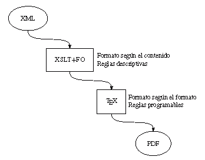
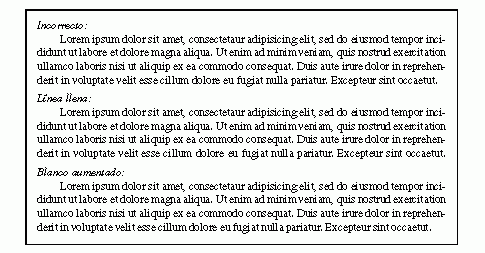
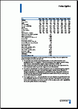
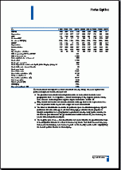
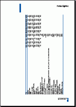

De XML a PDF, y transformaciones según el formato
Version modificada del artículo De XML a PDF: Tipografía con TEX.
Los archivos PDF permiten un control total sobre el formato, lo que plantea el reto de crear, a partir de XML, documentos PDF con la calidad tipográfica necesaria y adaptados a las pautas ortotipográficas que uno puede esperar en un libro u otra publicación. A continuación se describe cómo solucionar este problema con la introducción de las transformaciones según el formato, que añaden un nivel adicional al habitual, y único en casi todos los sistemas, de trasformaciones según el contenido.
En los nuevos sistemas de edición automatizada no es raro que se dé una disociación entre la herramienta y el oficio, de tal forma que la herramienta, es decir, los sistemas informáticos, han pasado a ser el oficio, y que el auténtico oficio, la tipografía, ha quedado relegado a un segundo plano o, simplemente, ha desaparecido. Toda innovación se analiza desde el punto de vista técnico de los medios, pero a menudo se pierde de vista el fin que se busca con ellos. Es preciso recordar, y es lo que en el fondo se pretende aquí, que esos medios, que sin duda son técnicamente muy avanzados, tienen que medirse también por los resultados tipográficos.
El mecanismo seguido normalmente para la transformación de XML a PDF está esquematizado en la siguiente figura, donde el proceso de conversión ha quedado sucintamente reducido a dos pasos esenciales: la trasformación de XML a una forma que un programa de composición pueda entender, y la creación del archivo PDF por ese programa:

El primer paso está indicado como XSLT+FO, pero igualmente podria ser DSSSL o incluso xmltex o dblatex; el método concreto es irrelevante aquí.
También hay varias posibilidades para el segundo paso: Java y FOP no son particularmente sofisticados, y de TEX se suele hacer un uso más bien mecánico. Sin embargo, es posible, y conveniente, sacar partido de las posibilidades de TEX con un uso más creativo basado en su capacidad de hacer transformaciones según el formato. En particular:
- Normas tipográficas
- La influencia de los programas de maquetación se ha dejado sentir
en los mecanismos de formato usados en
XML. Más preocupados por los aspectos
macrotipográficos, los detalles microtipográficos --según unas
reglas implícitas que normalmente caen dentro de las tareas del
corrector tipográfico-- son a menudo desconocidos. Un ejemplo
es la norma, tradicional en España, que establece que la última línea
del párrafo no ha de ser más corta que la sangría de la primera línea
con objeto de evitar un escalón visual, o bien que se debe evitar que
el blanco que quede sea menor que esa sangría:

En corrección tipográfica manual, la norma ha sido llenar la línea, aunque aquí TEX prueba tanto a llenar como a acortar, y de estas dos soluciones elige la óptima. En el ejemplo se muestra un párrafo incorrecto y las dos posibles soluciones. De ellas, TEX opta aquí por la línea llena.
- Formato en función del formato
- Las transformaciones que hay que aplicar no sólo pueden depender
del contenido, sino también del formato. Por ejemplo, podemos exigir
que los cuadros ocupen justo la medida del texto (izquierda), y si
no hubiera espacio suficiente, que sea la medida más dos centímetros
(centro). Si sobrepasara el ancho se apaisaría en página aparte
(derecha) e incluso en casos extremos se estrecharía laletra.
  
Ello no se opone a las transformaciones según el contenido, sino que más bien se introduce un nivel adicional. (Para los ejemplos simplemente he ido prolongando una línea del XML original.) - Reglas programables
- Hay reglas que quedan fuera de cualquier intento de sistematización. Son muy específicas de las situaciones concretas o de la naturaleza de la obra y es imposible crear parámetros que cubran absolutamente todas las posibilidades. Disponer de un entorno de composición programable puede resultar esencial en estos casos
El reto que plantea el primero de estos puntos no es pequeño. Programas como QuarkXPress, PageMaker e InDesign pueden importar XML, pero los detalles tipográficos siguen quedando en manos de los que lo usan, en un proceso que en buena medida sigue siendo artesanal. Una de las principales virtudes de XML es que se puede omitir por completo cualquier detalle del aspecto, pero en un proceso automatizado eso implica que no podemos intervenir manualmente para controlar los detalles tipográficos. El objetivo es, por tanto, obtener un archivo PDF tipográficamente correcto a partir de un documento XML que carezca por completo de toda indicación tipográfica.
Una de las diferencias fundamentales de TEX en la forma de trabajar con el texto, y que comparte con SGML y derivados, es que los cambios no se aplican directamente sobre el documento con el texto, algo que sí hacen programas como Word o PageMaker. Aunque estos últimos programas tienen la capacidad de ser programados (bien con Visual Basic, bien con AppleScript, o incluso con C o C++ a través de una API), esto limita seriamente sus capacidades para la automatización.